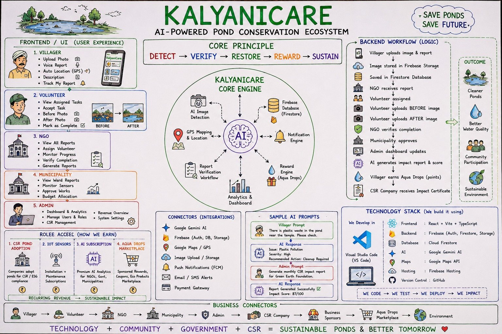
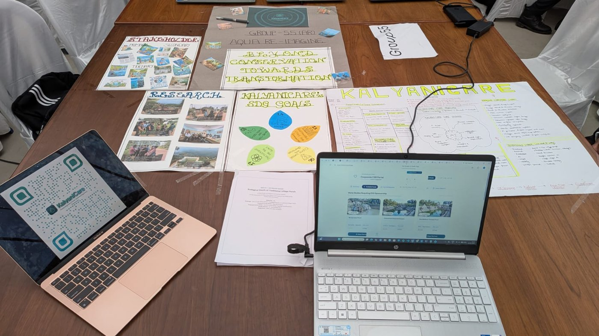

Protecting Every Pond. Empowering Every Community.
An AI-powered platform that helps villagers, volunteers, NGOs, municipalities and CSR partners restore the traditional ponds (kalyanis) of Anekal Taluk.
Open the live app See how it worksAligned with SDG 14 (Life Below Water): the ecological death of traditional village ponds.
Kalyanis once supplied drinking and cultural water. Household greywater and sewage overflow now feed toxic weeds and disease-breeding conditions.
Local youth groups want to restore ponds but lack a baseline framework to track water quality or coordinate volunteers.
Without continuous tracking, CSR money often goes to short-term cosmetic clean-ups instead of lasting recovery.
A transparent, community-led digital registry that tracks each pond's health over time and proves what was restored.
One connected workflow from the first photo to a verified impact report.

Built with a modern web stack and Google AI.
React, Vite, TypeScript
Firebase: Auth, Firestore, Storage
Google Gemini for issue detection and impact reports
Google Maps API and GPS reporting
Vercel
GitHub
How KalyaniCare can sustain itself as it grows.
Companies adopt ponds and receive verified impact reports for ESG compliance.
Installation and maintenance subscriptions for live water monitoring.
Premium analytics for NGOs, government and municipalities.
Villagers redeem points for sponsored rewards, coupons and eco products.
